Existing collection bathed. Spider mites reported on Morgana, Phil, C-3PO, Tywin, Karlach, and Calcifer.
Five arrivals photographed and bathed Oct 11. Cactus, flytrap, ponytail palm, and Red Banana croton first recorded here Oct 12. Cactus, ponytail, and croton bath dates unconfirmed; flytrap not bathed or watered by Reece. Seven named; ponytail palm and croton names pending. Malefecent is in care for Amber.
Inspect undersides and stems; repeat the white-paper test on affected plants and the palm. Continue any spray treatment at its label interval.
Baths are logged as foliage cleaning. Check soil moisture before watering; pest clearance still needs follow-up. Keep new arrivals separate while the existing outbreak is active.
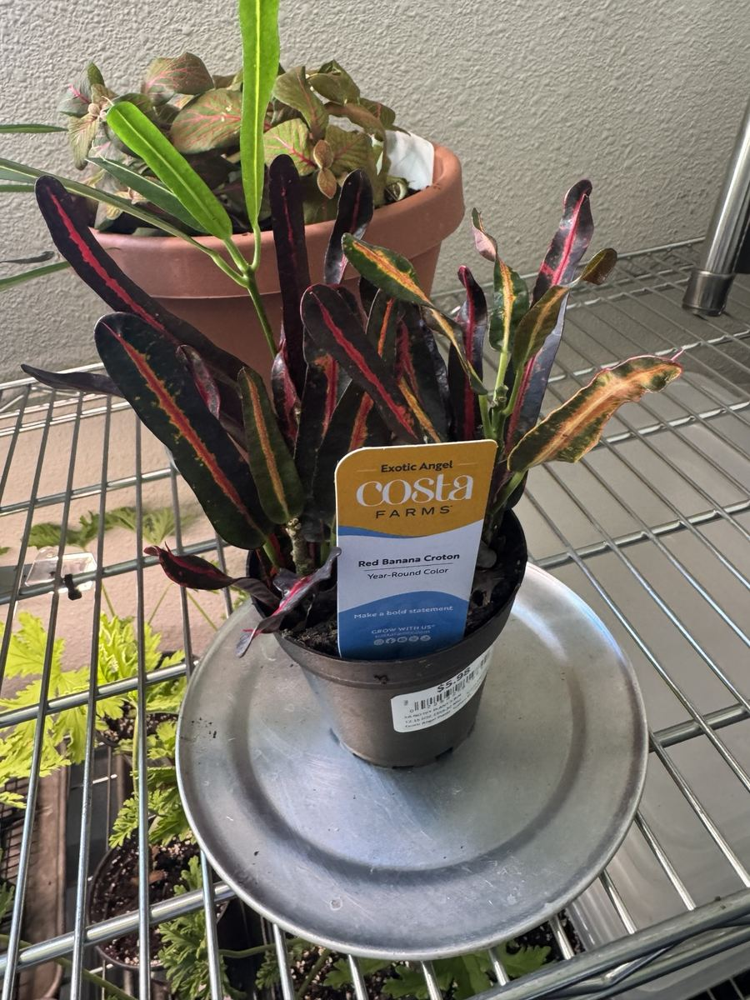
Full foliage with strong red, dark purple, orange, and green coloring. The green growth at the top appears newer. No obvious widespread yellowing or collapse in the Oct 12 photo; roots and pest status have not been assessed.
Water when the top 1–2 inches of mix feel dry. Water thoroughly, drain, and empty the saucer. Avoid prolonged soggy soil or letting the whole pot dry out.
Bright window or strong grow light. Introduce stronger direct sun gradually; insufficient light can reduce color and cause leaf loss.
No immediate feeding while settling in. Fertilize once or twice in spring–summer, following the product’s label rate. Skip while stressed or resting.
Home confirmed Oct 12; metal plant shelf shown in the photo. Final placement and window direction not recorded.
Keep in the nursery pot while settling in if drainage is good. Repot if roots are crowded or the mix stays wet too long; use a slightly larger pot with drainage.
Recommended: 2 parts indoor potting mix + 1 part perlite/pumice. Current nursery mix composition is unconfirmed.
Check for live mites, fine webbing, pale stippling, and damaged new growth. Watch for sustained leaf drop, soggy soil, or persistent wilting. Keep conditions stable and avoid cold drafts.
No infestation confirmed from this photo. Inspect the leaf undersides and stem joints before placing beside other plants. No treatment or pest clearance recorded.
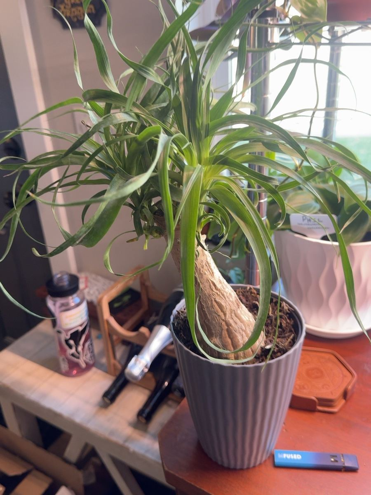
Green foliage with several bent or creased leaves and pale scuffed areas in the Oct 12 photo. Curving, arching leaves are typical. The cause of the damaged areas is unconfirmed; pests, trunk firmness, and roots have not been assessed.
Let the mix dry throughout before watering thoroughly and draining. Water less often in winter. Check moisture rather than using the tropical plants’ watering schedule.
Brightest available window with direct sun; increase stronger sunlight gradually to prevent scorching.
No immediate feeding. Fertilize once or twice during active spring–summer growth at the product’s label rate; skip while stressed or resting.
Table beside the window shown in the photo; window direction and final placement not recorded.
No immediate repot indicated by this photo. Confirm drainage; change the mix if it stays wet for prolonged periods. Otherwise repot only when crowded, using a slightly larger pot.
Fast-draining cactus/succulent mix with added perlite or pumice; a 1:1 mix is a practical starting point. Use a pot with drainage and keep the swollen trunk above the mix.
Watch for a soft trunk or base, spreading yellowing, prolonged wet soil, fine webbing, or moving mites. Existing creases and dead leaf tips will not recover; monitor new growth. Leaf damage alone does not confirm an infestation.
Usually grown from seed. Leaf cuttings will not make a new plant; leave attached shoots in place.
No infestation confirmed from the photo. Keep apart from affected plants while the collection’s mite outbreak is active and check leaf bases and undersides.
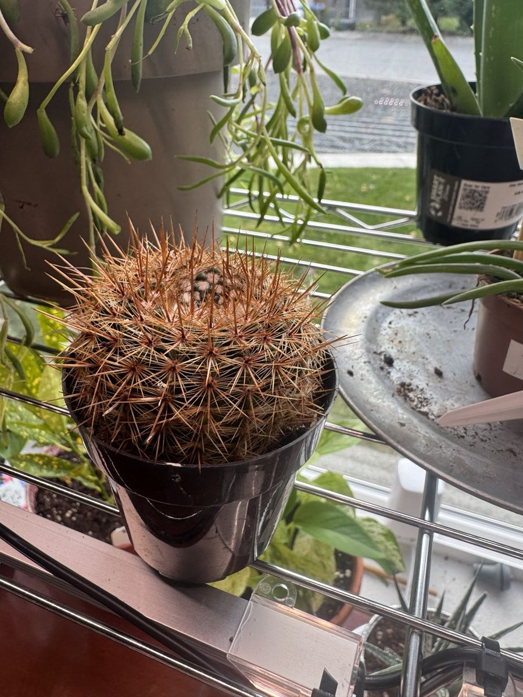
Compact, rounded cactus with dense orange-red and pale spines. No obvious collapse in this photo. Mammillaria is a tentative ID; roots and firmness have not been assessed.
Let the entire mix dry before watering thoroughly and draining. Keep nearly dry if cool and resting in winter; do not give it the tropical plants’ watering schedule.
Very bright light with direct window sun; introduce stronger sunlight gradually. Avoid prolonged shade or obstruction by other plants.
No immediate feeding. Use a cactus fertilizer at its label rate only during active growth; skip while resting or stressed.
Window shelf shown in the photo; window direction and final placement not recorded.
No immediate repot indicated by the photo. Change the mix if it remains wet for prolonged periods or drainage is poor; otherwise wait for clear crowding.
1 part cactus/succulent mix + 1 part pumice/perlite; use a pot with drainage.
Watch for spreading dark or soft areas, a shrinking or collapsed base, prolonged wet soil, and narrow stretched new growth. Some crown wool may be natural; inspect separate cottony clusters for mealybugs.
Offsets, if the plant produces them, or seed. Exact growth habit and flower color depend on the species.
No infestation confirmed from this photo. Inspect between spine clusters and around the pot; bath and spray history are not recorded.
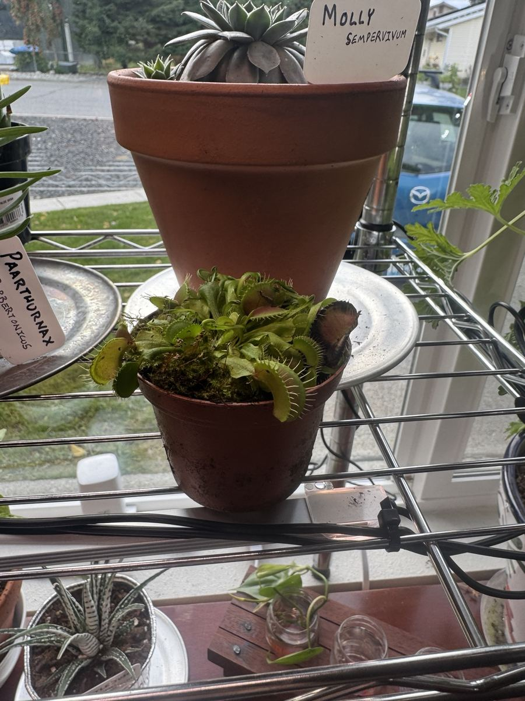
Alive: several green traps and smaller central leaves are visible, with blackening and yellowing on some older traps. Age, acclimation, water quality, light, and seasonal changes need checking before assigning a cause.
Keep the medium moist with distilled, reverse-osmosis, or clean rainwater. While actively growing, use a shallow tray about 1–2 cm deep, below the crown; never let the root ball dry out. Reduce standing water during a cool winter rest.
Aim for at least 6 hours of direct sun after gradual acclimation, or a strong grow light about 12–16 hours daily while actively growing. A typical winter windowsill may be insufficient.
No standard fertilizer in the soil or water. Do not force-feed while it is stressed or traps are unresponsive; later, healthy growing traps can receive suitable small insects.
Window shelf shown in the photo; window direction, direct-sun hours, and supplemental light not recorded.
Avoid an immediate repot just for old black traps. Repot if the medium contains fertilizer or standard potting mix, or salts have accumulated. Otherwise allow acclimation and reassess in spring.
Unfertilized long-fiber sphagnum, or a carnivorous-plant mix such as unfertilized sphagnum peat with washed silica sand. No standard potting mix or fertilizer-enriched ingredients.
Track healthy new traps rather than the oldest ones. Trim only fully black dead material. Check light, water quality, medium, and seasonal conditions if traps do not close; appearance alone does not prove dormancy or root rot.
Divide established plants during a suitable repot; leaf pullings and seed are also possible. Wait until this plant is stable.
No infestation confirmed from this photo. Keep separate during the collection’s mite follow-up. Reece confirms no bath and no watering since receiving it; previous water quality remains unknown.
Plan a cool, bright winter rest for a seasonally grown plant; keep the medium moist and protect this small pot from prolonged hard freezing. Do not assume old black traps alone mean dormancy. Year-round indoor growth needs strong supplemental light and a consistent routine.
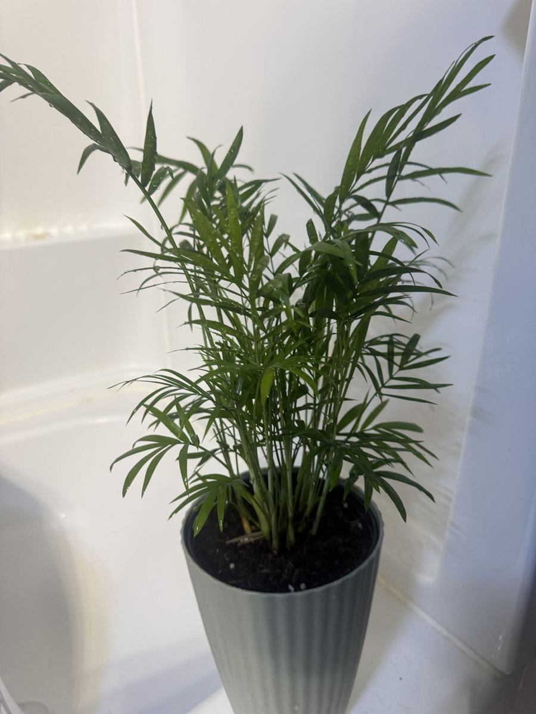
Mostly green, upright foliage with no obvious major decline in the arrival photo. Identification is likely; pests cannot be ruled out from a photo.
Water when the top 1 in is dry; water thoroughly and drain. Avoid letting the whole root ball stay dry for long.
Bright indirect light; tolerates lower light but grows more slowly. Avoid harsh direct sun.
Wait while acclimating. During active growth, use a houseplant fertilizer at the label rate; avoid feeding stressed plants.
Permanent location not recorded; keep separate during acclimation and pest follow-up.
Leave in its current pot while acclimating unless drainage is poor. Repot only when clearly crowded; avoid separating the clustered seedlings.
2 parts indoor potting mix + 1 part perlite/pumice; use a pot with drainage.
Check especially for spider mites: fine webbing, pale stippling, or moving dots under the leaflets. Watch for persistent yellowing or crispy tips.
Usually grown from seed; do not divide or cut off the growing tips to propagate.
Bathed Oct 11, 2026. No pest-free inspection or chemical treatment recorded. Inspect leaf undersides and stems before moving into the main collection.
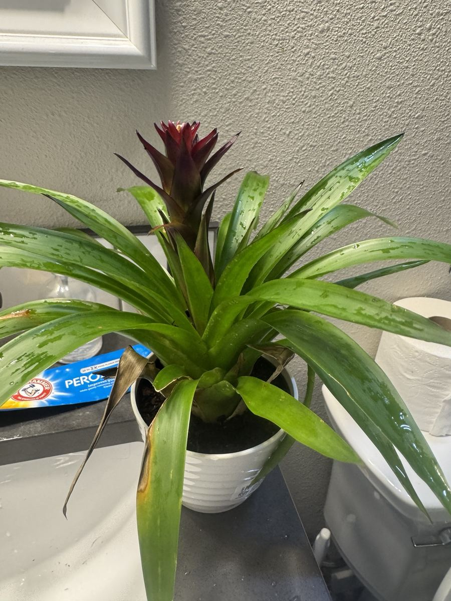
Green foliage and upright burgundy bracts, with dead lower leaves and several brown patches. Cause of the damage is not established from the photo.
Named Malefecent. Reece is caring for this plant for Amber.
Keep a little clean water in the cup where the green leaves meet; empty and refresh about weekly. Water the mix sparingly after its surface dries; do not keep the roots soggy.
Bright indirect light; avoid harsh direct sun.
Skip while assessing the damage. If actively growing, use a dilute bromeliad fertilizer according to its label; avoid fertilizer collecting in the cup.
Permanent location not recorded; keep separate during acclimation and pest follow-up.
Keep snug. Repot only if unstable, drainage is poor, or the mix has broken down.
Airy bromeliad mix, or fine orchid bark blended with some indoor mix and perlite.
Watch for spreading brown patches, a soft or foul-smelling center, and pups at the base. The flowering rosette eventually declines naturally after blooming.
Allow pups to reach roughly one-third to one-half of the mother plant’s size before separating; roots are helpful.
Bathed Oct 11, 2026. No pest-free inspection or chemical treatment recorded. Inspect leaf undersides and stems before moving into the main collection.
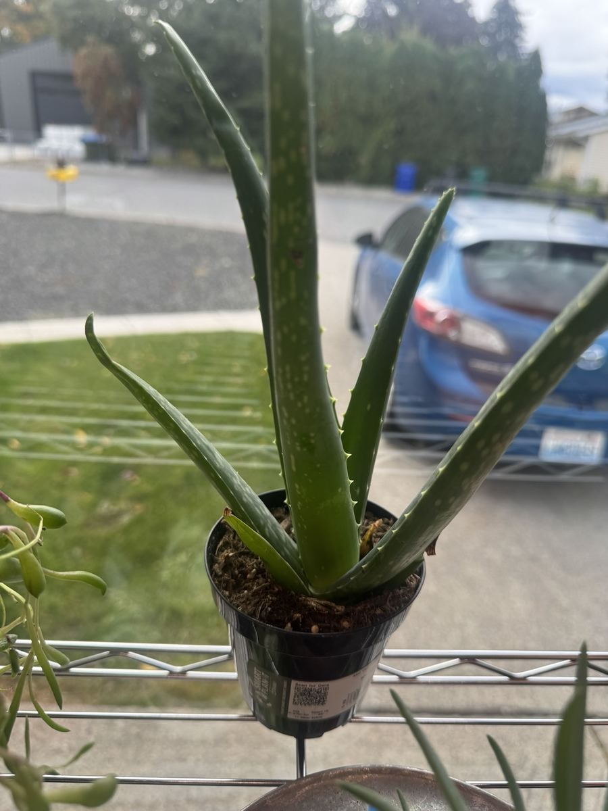
Upright green leaves with no obvious collapse. Some leaves are slender; watch the fullness and shape of new growth. Exact identification is tentative.
Let the mix dry throughout; then water thoroughly and drain completely. Water less often when light and growth decline.
Very bright light with some direct window sun; acclimate gradually to stronger sunlight.
Skip during acclimation. Feed lightly with a succulent fertilizer only during active growth, following its label.
Permanent location not recorded; keep separate during acclimation and pest follow-up.
No immediate repot from this photo. Change the mix if it stays wet for prolonged periods; otherwise repot when clearly crowded.
1 part cactus/succulent mix + 1 part pumice/perlite; use a pot with drainage.
Watch for soft or translucent leaves, a soft base, prolonged wet soil, and stretched new growth. Some juvenile spotting is normal.
Separate rooted pups when large enough to handle. Individual leaf pieces are not a reliable propagation method.
Bathed Oct 11, 2026. No pest-free inspection or chemical treatment recorded. Inspect leaf undersides and stems before moving into the main collection.
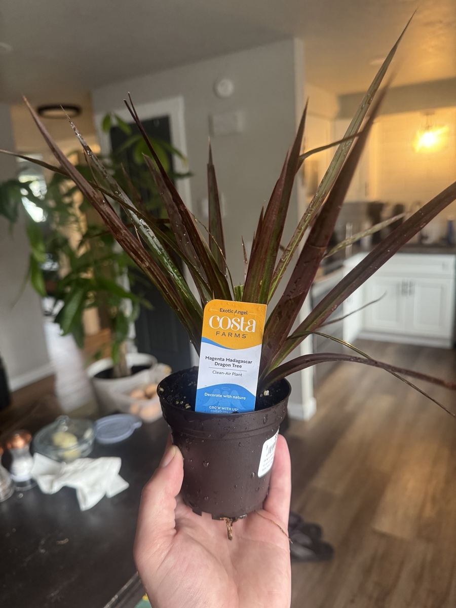
Tag confirms Magenta Madagascar Dragon Tree. Burgundy foliage appears reasonably healthy. A root is visible below the pot; this alone does not establish that it is rootbound.
Water when the top 1–2 in are dry; water thoroughly and drain. Allow more drying time in lower light.
Bright indirect light for strong color; tolerates lower light with slower growth.
Wait during acclimation. Feed lightly during active growth using a houseplant fertilizer at the label rate.
Permanent location not recorded; keep separate during acclimation and pest follow-up.
Check the root ball if the pot dries unusually fast or roots are densely crowded. If needed, move up one pot size; do not repot just for one protruding root.
2 parts indoor potting mix + 1 part perlite/pumice; drainage holes required.
Watch for soft stems, persistent lower-leaf yellowing, worsening brown tips, or spider mites. Burgundy coloration is normal for this cultivar.
Healthy stem or top cuttings can root; the remaining cane can form new shoots.
Bathed Oct 11, 2026. No pest-free inspection or chemical treatment recorded. Inspect leaf undersides and stems before moving into the main collection.
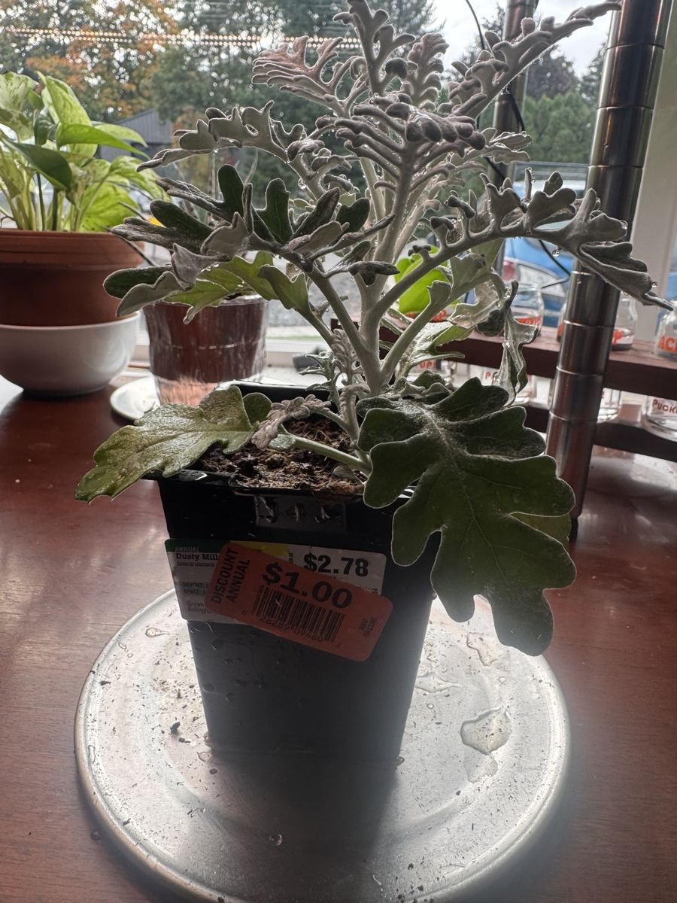
Upright growth with naturally silver, fuzzy foliage and some older lower-leaf wear. Indoor light is the main ongoing concern; pests are not excluded by this photo.
Water when the top 1–2 in are dry; water thoroughly and drain. Avoid a constantly wet root ball.
Full sun outdoors; indoors, use several hours of direct window sun or a strong grow light. Acclimate gradually.
No immediate feeding needed. Feed lightly only during active growth, following the fertilizer label.
Permanent location not recorded; keep separate during acclimation and pest follow-up.
Allow it to acclimate first. Repot if roots are densely crowded or drainage is poor; use only a slightly larger pot.
2 parts potting mix + 1 part perlite/pumice; free drainage is essential.
Watch for long, weak stems and widening gaps between new leaves. Silver fuzz is normal. Monitor soft stems, yellowing, and persistent wet soil.
Healthy stem-tip cuttings can be rooted. This is usually an outdoor bedding plant; winter survival indoors depends on sufficient light.
Bathed Oct 11, 2026. No pest-free inspection or chemical treatment recorded. Inspect leaf undersides and stems before moving into the main collection.
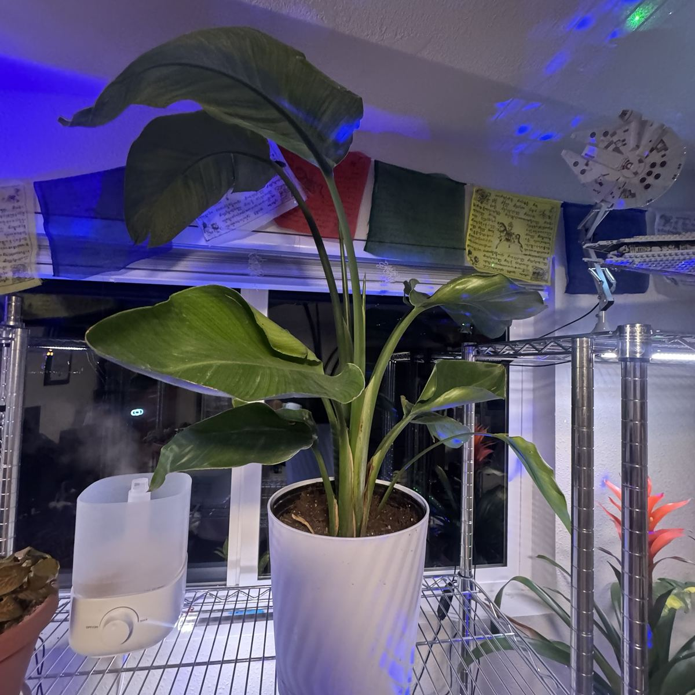
Large, established plant with active central growth and only minor older-leaf wear.
Water when the top 2–3 in is dry; water thoroughly.
Bright indirect light; a few hours of gentle direct sun is beneficial.
Balanced houseplant fertilizer at 1/2 strength about monthly in spring–summer; reduce or pause in low-light winter.
Not recorded
Roots at the drainage holes reported Oct 10. Check whether the root ball is densely crowded or dries unusually fast before sizing up; visible roots alone do not require an immediate repot.
2 parts indoor mix + 1 part perlite/pumice + 1 part fine bark/coco.
Track new central growth, leaning toward the light, and any increase in older tip or edge browning.
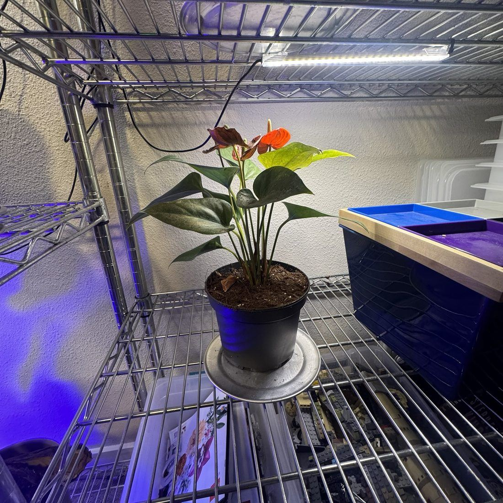
Spider mites reported Oct 10; bath completed Oct 10. Clearance has not been confirmed. Earlier photo assessment: Healthy, flowering, and producing fresh growth; one older spathe is spent.
Water when the top 1–2 in is dry; water thoroughly.
Bright indirect light; avoid harsh midday sun on the leaves.
Balanced houseplant fertilizer at 1/2 strength about monthly during active growth.
Not recorded
Recently repotted—leave it alone for now.
2 parts indoor mix + 1 part orchid bark + 1 part perlite/pumice.
Watch for live mites, fine webbing, pale stippling, and damaged new growth. Watch new leaves for clean growth and older flowers as they age; monitor any worsening edge scorch.
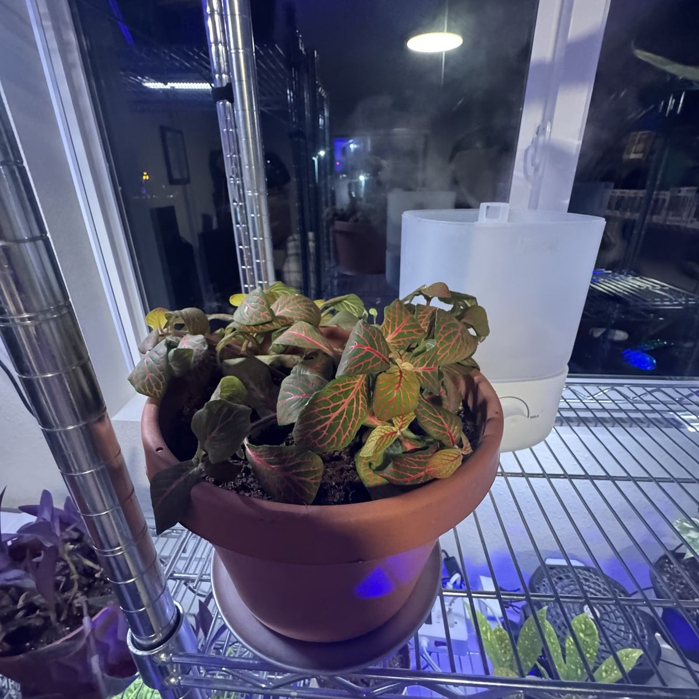
Full, colorful, and actively growing after repotting; minor uneven posture remains.
Water when the top ½–1 in is dry; water thoroughly.
Medium to bright indirect light; avoid hot direct sun.
Balanced fertilizer at 1/4–1/2 strength about monthly in spring–summer; avoid heavy feeding.
Not recorded
Recently repotted—leave it alone for now.
2 parts indoor mix/coco + 1 part perlite/pumice; airy but moisture-retentive.
Watch leaf firmness, new tip growth, and whether the larger pot stays wet too long.
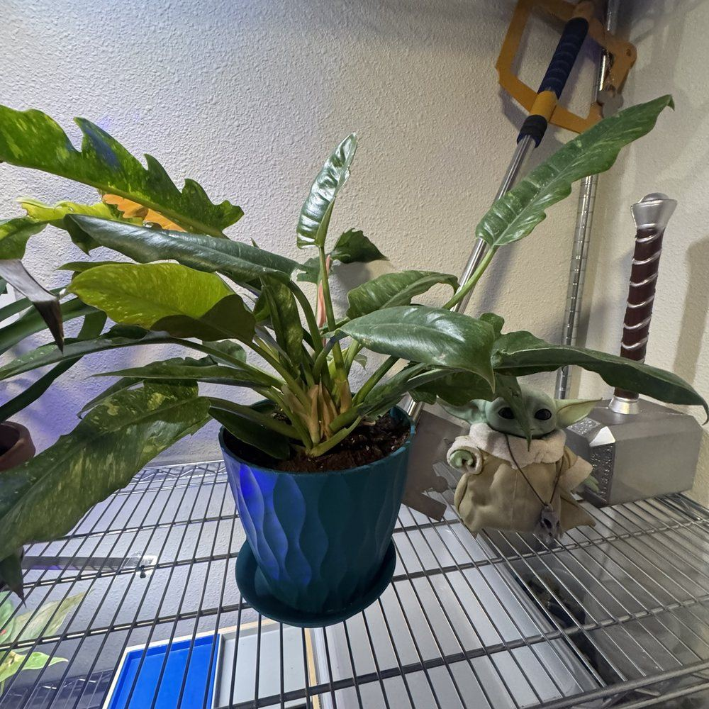
Excellent — strong, upright growth with good variegation and a fresh colored leaf emerging from the center.
Water when the top 1–2 in is dry; water thoroughly.
Bright indirect light for strongest growth and variegation; gentle morning sun is fine.
Balanced houseplant fertilizer at 1/2 strength about monthly during active growth.
Not recorded
Recently repotted—leave it alone for now.
2 parts indoor mix + 1 part orchid bark + 1 part perlite/pumice.
Track the new leaf as it unfurls and hardens. Some browning on highly variegated older tissue is cosmetic unless it begins spreading into new growth.
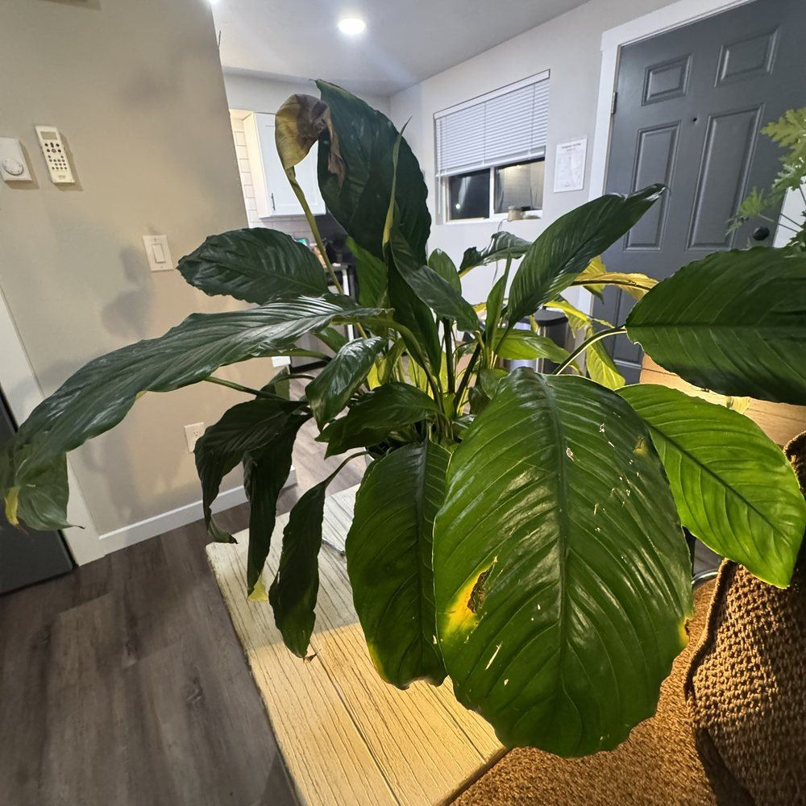
Good overall — very full and vigorous, with some older-leaf yellowing and one large leaf with a substantial dead patch.
Water when the top 1 in is dry; water thoroughly.
Medium to bright indirect light; tolerates lower light but flowers better with brighter exposure.
Balanced fertilizer at 1/2 strength every 6–8 weeks in spring–summer.
Not recorded
Repot when rootbound or the mix/drainage deteriorates.
2 parts indoor mix/coco + 1 part perlite/pumice; airy but moisture-retentive.
Watch the newest leaves. If yellowing or brown lesions begin appearing on fresh growth, reassess watering, drainage, light, and roots; isolated older-leaf damage is less concerning.
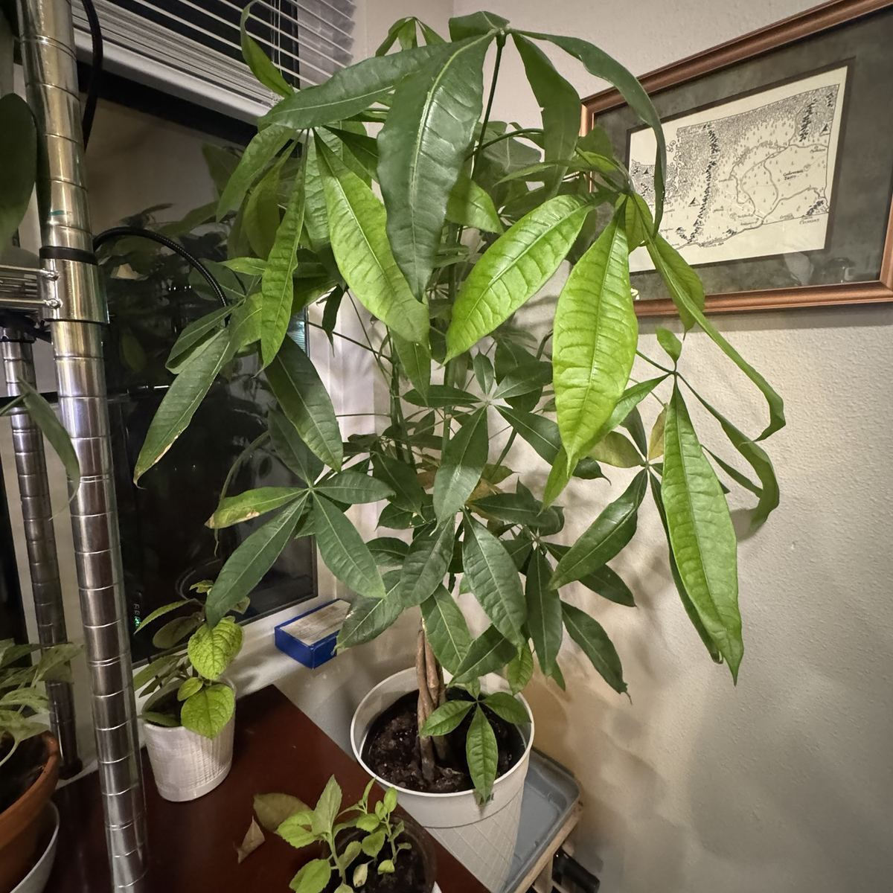
Spider mites reported Oct 10; bath completed Oct 10. Clearance has not been confirmed. Earlier photo assessment: Strong recovery with a large flush of healthy bright-green new growth.
Water when the top 2–3 in is dry; water thoroughly.
Bright indirect light; a little gentle morning or late-day sun is fine.
Balanced houseplant fertilizer at 1/2 strength about monthly in spring–summer.
Not recorded
Repot when rootbound or the mix/drainage deteriorates.
2 parts indoor mix + 1 part perlite/pumice + 1 part fine bark/coco.
Watch for live mites, fine webbing, pale stippling, and damaged new growth. Track the new flush as it darkens and expands; remove older yellow leaves only after they are mostly spent.
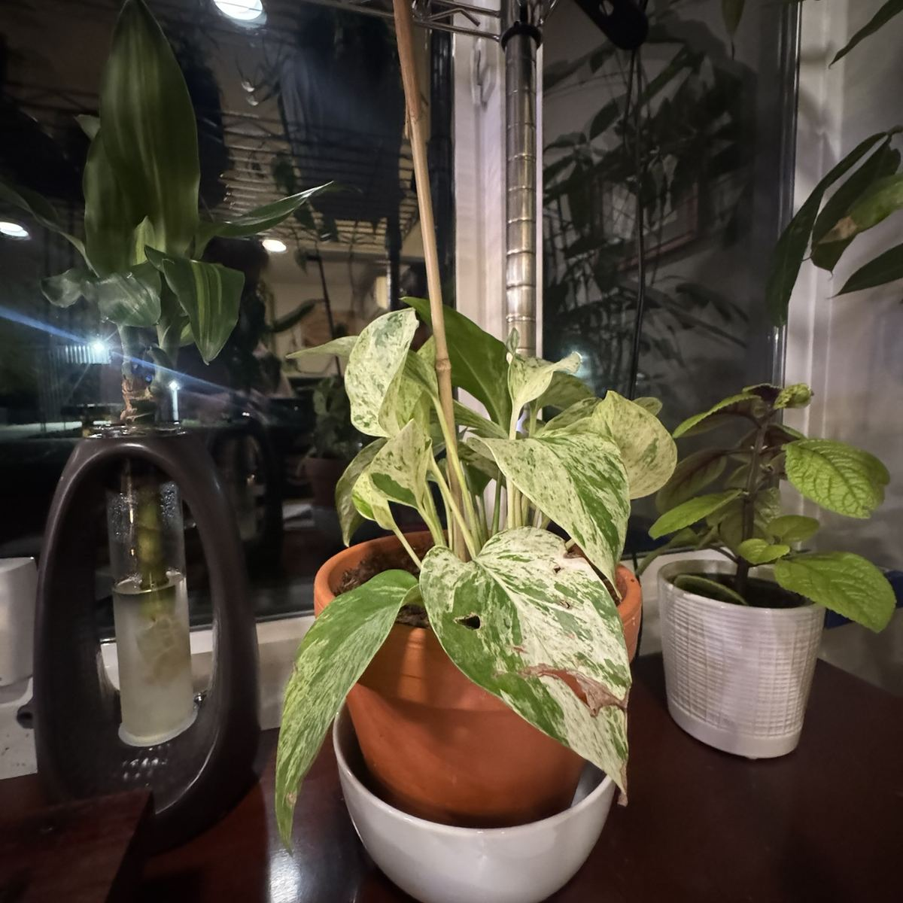
Spider mites reported Oct 10; bath completed Oct 10. Clearance has not been confirmed. Earlier photo assessment: Full, strongly variegated growth with only minor cosmetic leaf tears/browning.
Water when the top 1–2 in is dry; water thoroughly.
Medium to bright indirect light; brighter light helps maintain variegation.
Balanced houseplant fertilizer at 1/2 strength about monthly during active growth.
Not recorded
Recently repotted—leave it alone for now.
2 parts indoor mix + 1 part orchid bark + 1 part perlite/pumice.
Watch for live mites, fine webbing, pale stippling, and damaged new growth. Track whether new leaves stay clean; older tears and brown patches do not need treatment if they remain isolated.
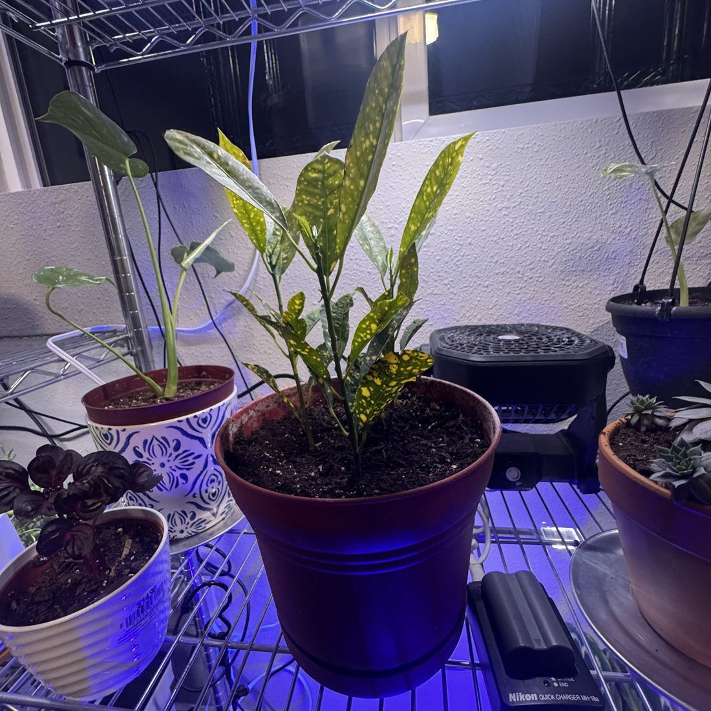
Spider mites reported Oct 10; bath completed Oct 10. Clearance has not been confirmed. Earlier photo assessment: Improving with upright growth and several fresh leaves; color is strong.
Water when the top 1–2 in is dry; water thoroughly.
Very bright light with some direct sun; stronger light helps retain color.
Balanced fertilizer at 1/2 strength about monthly in spring–summer; wait until clearly recovering from stress.
Not recorded
Recently repotted—leave it alone for now.
2 parts indoor mix + 1 part perlite/pumice + 1 part fine bark/coco.
Watch for live mites, fine webbing, pale stippling, and damaged new growth. Track new leaf size and continued leaf retention; watch for sudden leaf drop, crispy tips, or spider mites.
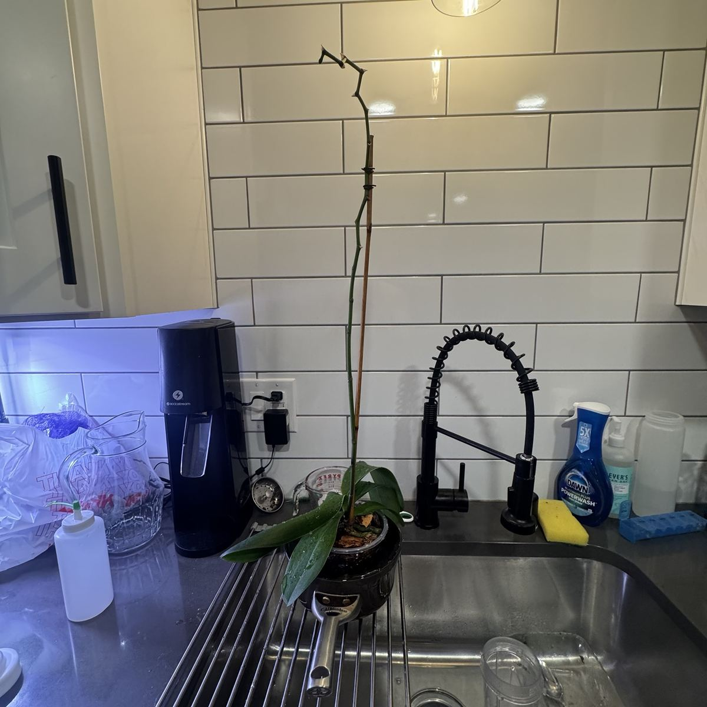
Post-bloom; foliage remains green and the spent flower spike is drying back.
Water when visible roots are mostly silver-gray and bark is nearly dry; drain completely.
Bright indirect light; an east window or filtered south/west exposure works well.
Orchid fertilizer at about 1/4 strength every 2–4 waterings while actively growing; periodically flush with plain water.
Not recorded
Repotted 8/22/26; repot for root problems or broken-down media.
Mostly orchid bark with perlite/pumice.
Track firm green leaves, plump green/silver roots, fresh root tips, and the next new leaf.
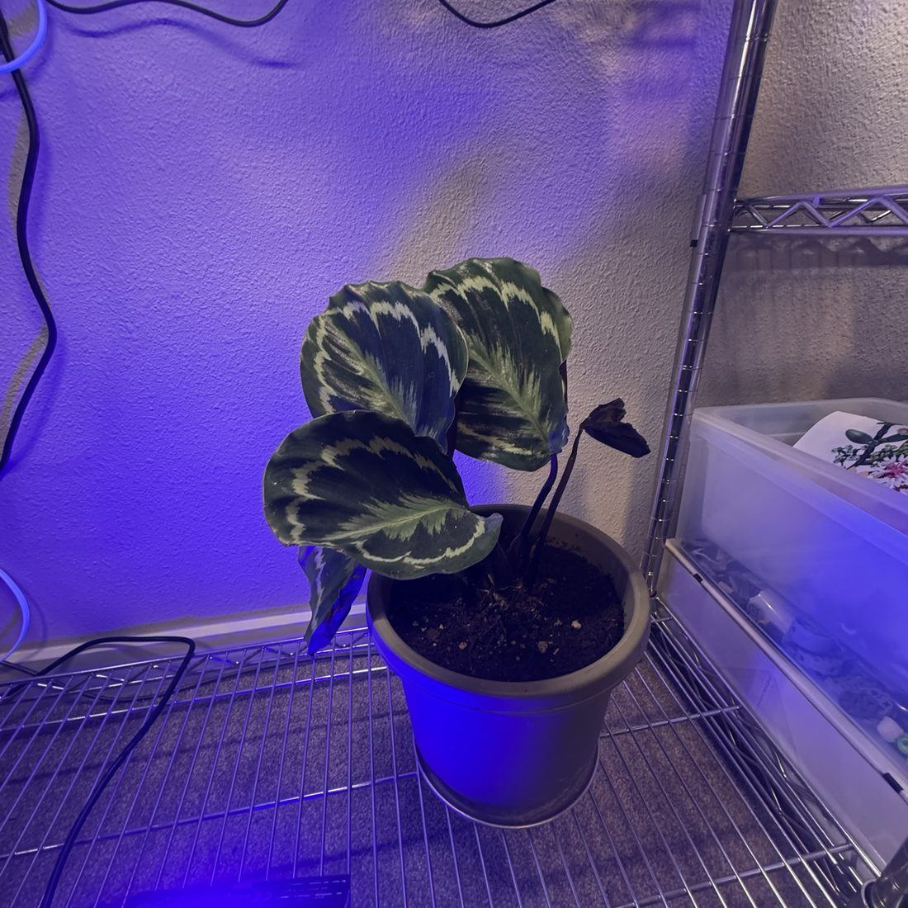
Stable but still sparse; the remaining leaves hold good color, with one damaged/declining leaf.
Water when the top ½–1 in is dry; water thoroughly.
Medium to bright indirect light; avoid direct sun and sudden exposure changes.
Balanced fertilizer at 1/4–1/2 strength about monthly in spring–summer; avoid excess salts.
Not recorded
Recently repotted—leave it alone for now.
2 parts indoor mix/coco + 1 part perlite/pumice; airy but moisture-retentive.
Watch for a fresh central shoot, curling, edge crisping, and further leaf loss.
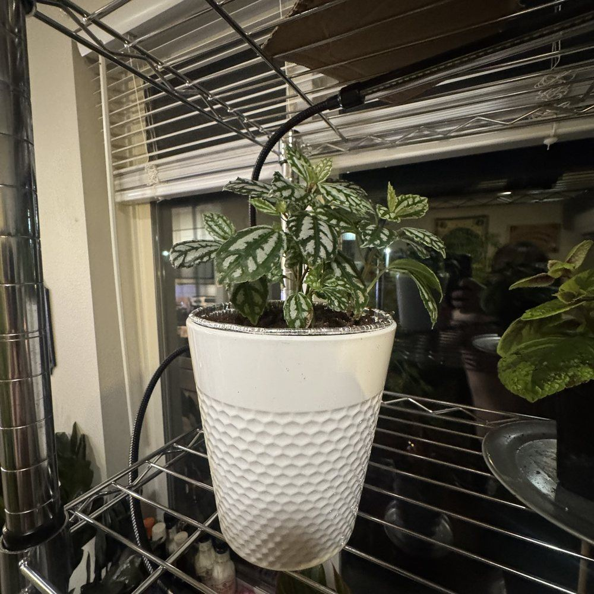
Excellent — compact, upright, and actively growing with strong silver markings and several healthy stems.
Water when the top 1 in is dry; water thoroughly.
Bright indirect light; some gentle morning sun is acceptable.
Balanced fertilizer at 1/2 strength about monthly during active growth.
Not recorded
Repot when rootbound or the mix/drainage deteriorates.
2 parts indoor mix + 1 part perlite/pumice.
Watch for excessive stretching toward the light or prolonged wet soil; otherwise growth is moving in the right direction.
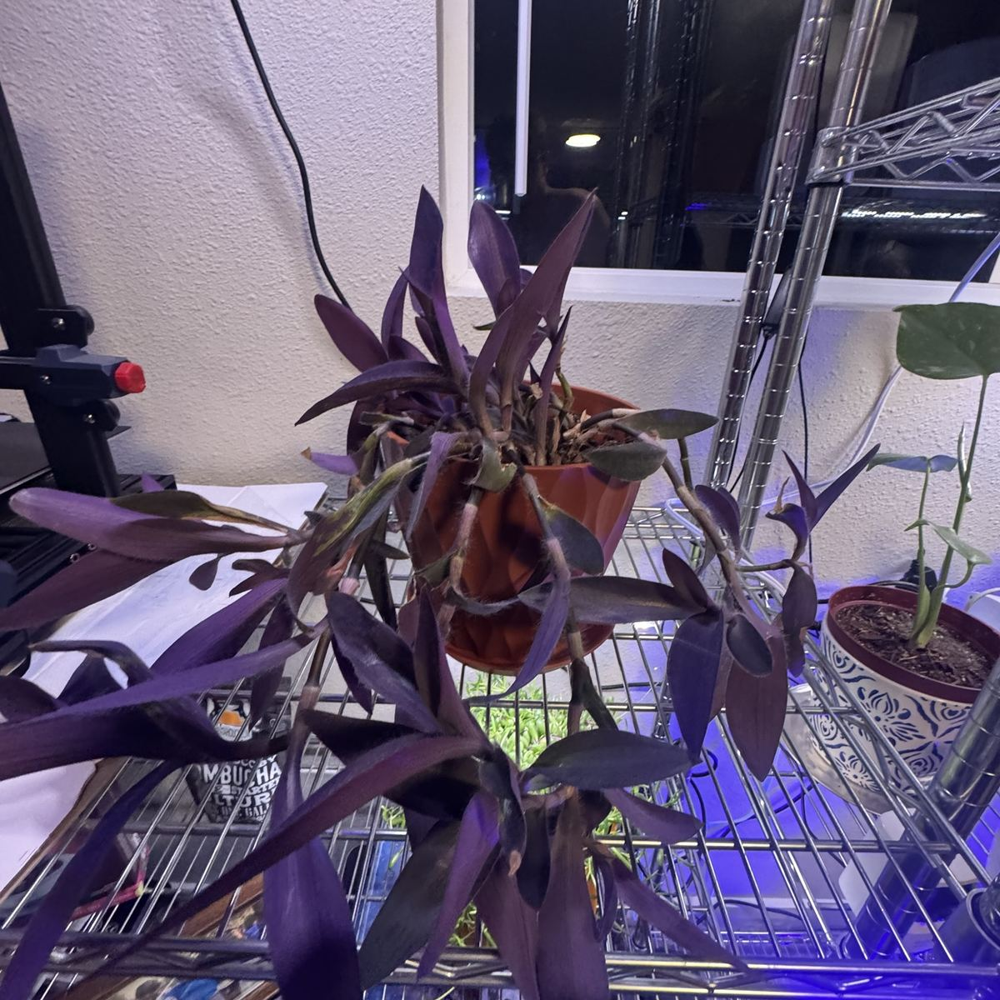
Very vigorous, dense trailing growth with strong purple coloration.
Water when the top 1–2 in is dry; water thoroughly.
Very bright light with several hours of direct sun for compact, deeply purple growth.
Balanced fertilizer at 1/2 strength about monthly in spring–summer.
Not recorded
Repot when rootbound or the mix/drainage deteriorates.
2 parts indoor mix + 1 part perlite/pumice.
Watch lower-stem bareness and stem spacing; strong purple color and tight growth indicate adequate light.
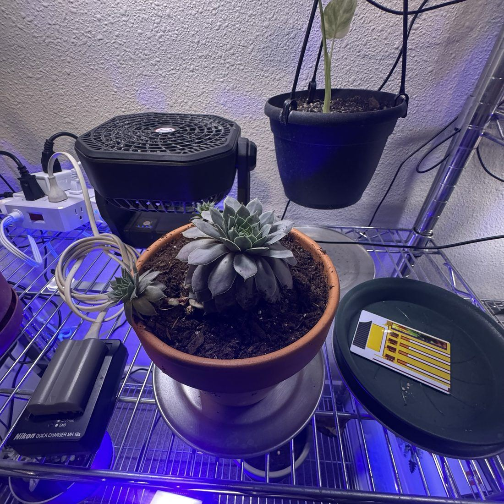
Center rosette is firm with an attached offset; outer leaves show some age/stress.
Let the mix dry completely; then water thoroughly.
Full sun or the brightest window available; indoor light is often the limiting factor.
Minimal feeding: cactus/succulent fertilizer at 1/4 strength once or twice during active growth; skip in winter.
Not recorded
Prefers a snug pot; repot only when clearly crowded.
1 part cactus/succulent mix + 1 part pumice/perlite.
Watch for stretching, soft/translucent leaves, and whether the offset stays firm. The mix should not stay damp for long.
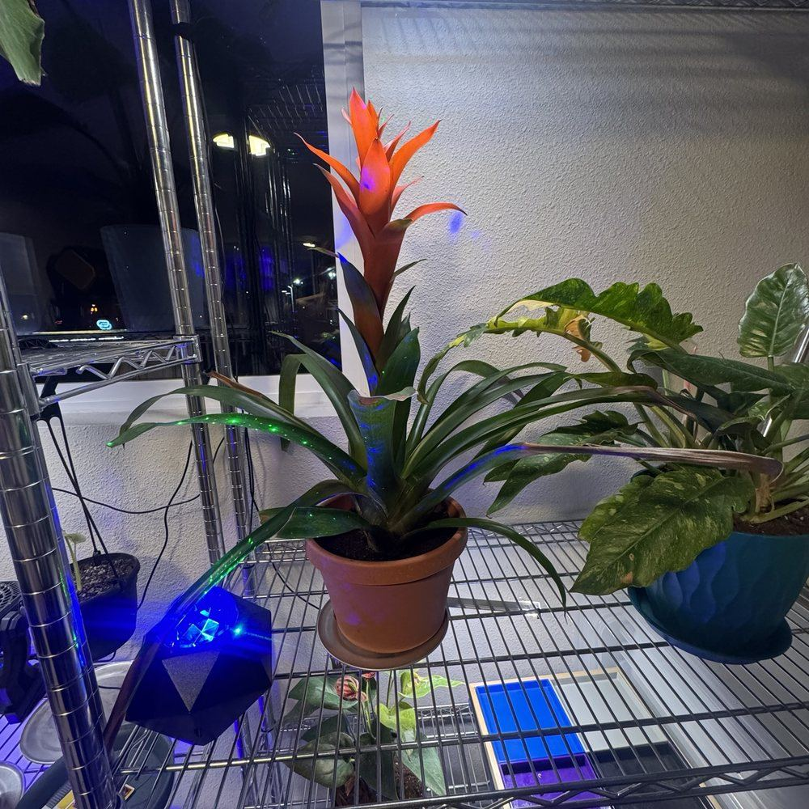
Spider mites reported Oct 10; bath completed Oct 10. Clearance has not been confirmed. Earlier photo assessment: Excellent — the foliage is firm and green and the red-orange flower bracts remain vivid and upright.
Keep a little clean water in the central cup and flush weekly; water the mix when the surface starts drying.
Bright indirect light; avoid prolonged harsh midday sun.
Bromeliad or balanced fertilizer at about 1/4 strength monthly in spring–summer; keep fertilizer out of the central cup.
Not recorded
Keep fairly snug; repot only if unstable or the mix breaks down.
1 part indoor mix + 1 part fine bark + 1 part perlite/pumice.
Watch for live mites, fine webbing, pale stippling, and damaged new growth. Watch for the normal gradual fading of the bracts and for pups developing near the base; neither signals a problem.
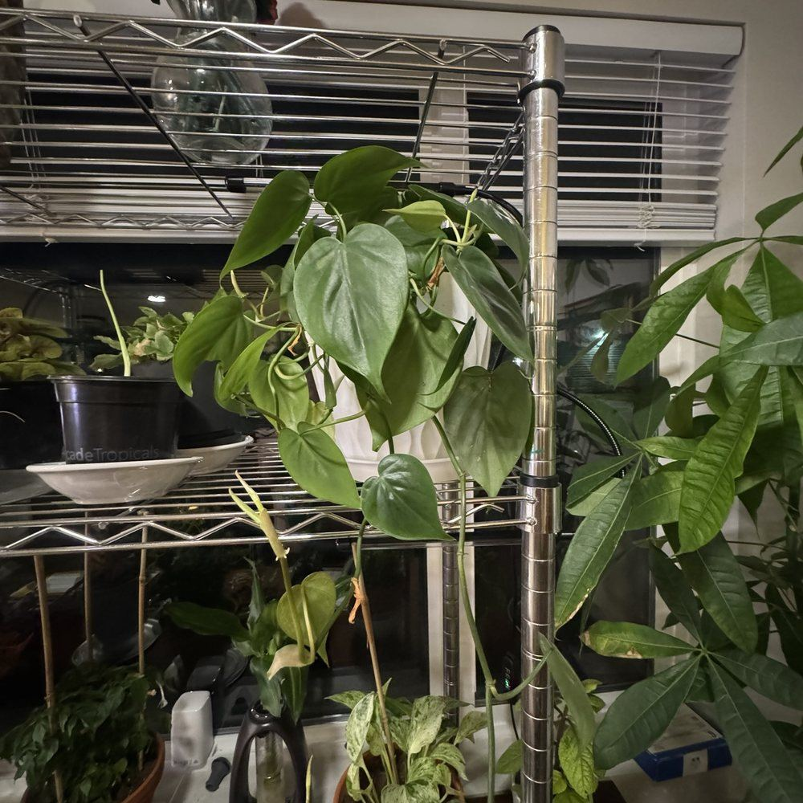
Spider mites reported Oct 10; bath completed Oct 10. Clearance has not been confirmed. Earlier photo assessment: Excellent — dense, vigorous foliage with several fresh light-green leaves and long healthy vines.
Water when the top 1–2 in is dry; water thoroughly.
Medium to bright indirect light; tolerates lower light but grows fuller with brighter exposure.
Balanced houseplant fertilizer at 1/2 strength about monthly during active growth.
Not recorded
Repot when rootbound or the mix/drainage deteriorates.
2 parts indoor mix + 1 part orchid bark + 1 part perlite/pumice.
Watch for live mites, fine webbing, pale stippling, and damaged new growth. Track the longest vines for increasing bare internodes; brighter indirect light and occasional tip-pruning will keep the pot fuller.
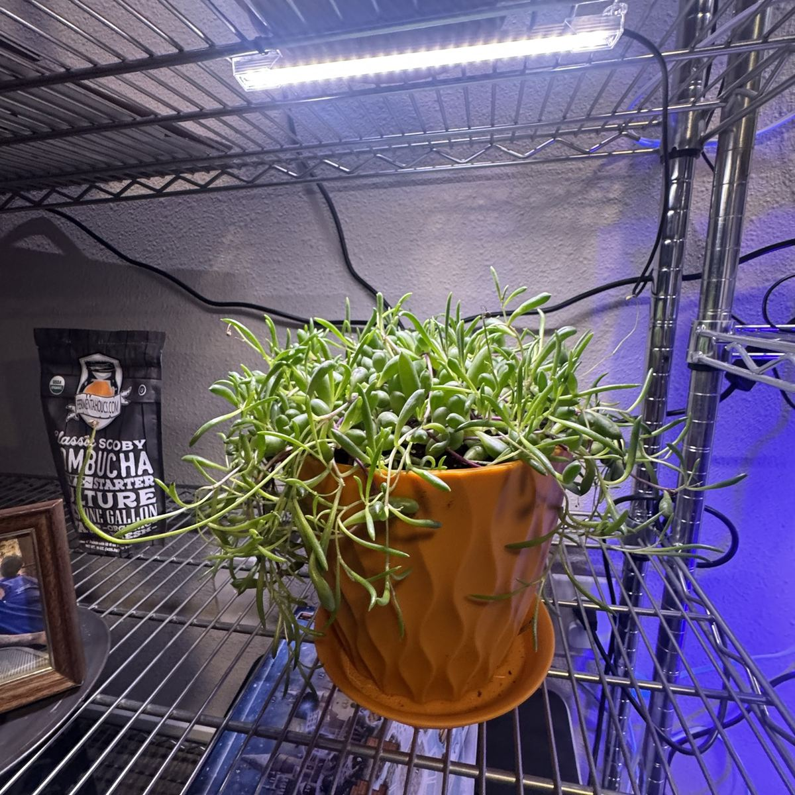
Dense, vigorous trailing growth; foliage looks firm and well hydrated.
Let the mix dry almost completely; then water thoroughly.
Very bright light with several hours of direct sun for compact growth and strong coloration.
Cactus/succulent fertilizer at 1/4–1/2 strength every 6–8 weeks in spring–summer; skip in winter.
Not recorded
Repot when rootbound or the mix/drainage deteriorates.
1 part cactus/succulent mix + 1 part pumice/perlite.
Watch leaf plumpness, stem spacing, and color response to the grow light.
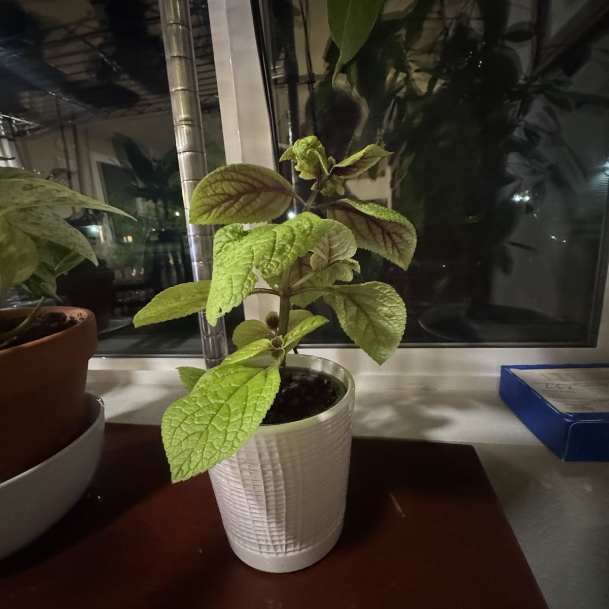
Established upright growth with fresh tip growth and healthy textured foliage.
Water when the top 1 in is dry; water thoroughly.
Bright indirect light; a little gentle morning or late-day sun is fine.
Balanced fertilizer at 1/2 strength about monthly during active growth.
Not recorded
Repot when rootbound or the mix/drainage deteriorates.
2 parts indoor mix + 1 part perlite/pumice.
Track branching, leaf size, and the green-to-purple coloration on new foliage.
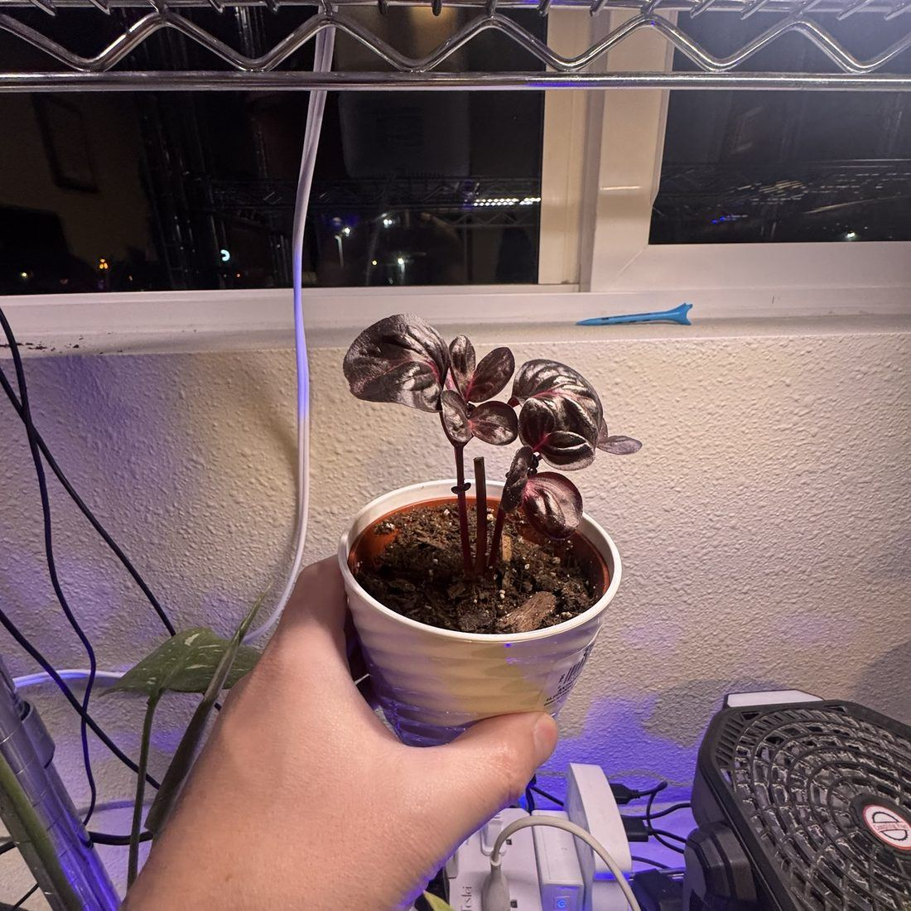
Compact and upright with healthy dark foliage and active new growth.
Water when the top 1 in is dry; water thoroughly.
Very bright light with some direct sun to maintain dense growth and strong burgundy color.
Balanced fertilizer at 1/2 strength every 3–4 weeks during active growth.
Not recorded
Recently repotted—leave it alone for now.
2 parts indoor mix + 1 part perlite/pumice.
Watch new leaves for consistent color and any return of spotting, crisping, or collapse.
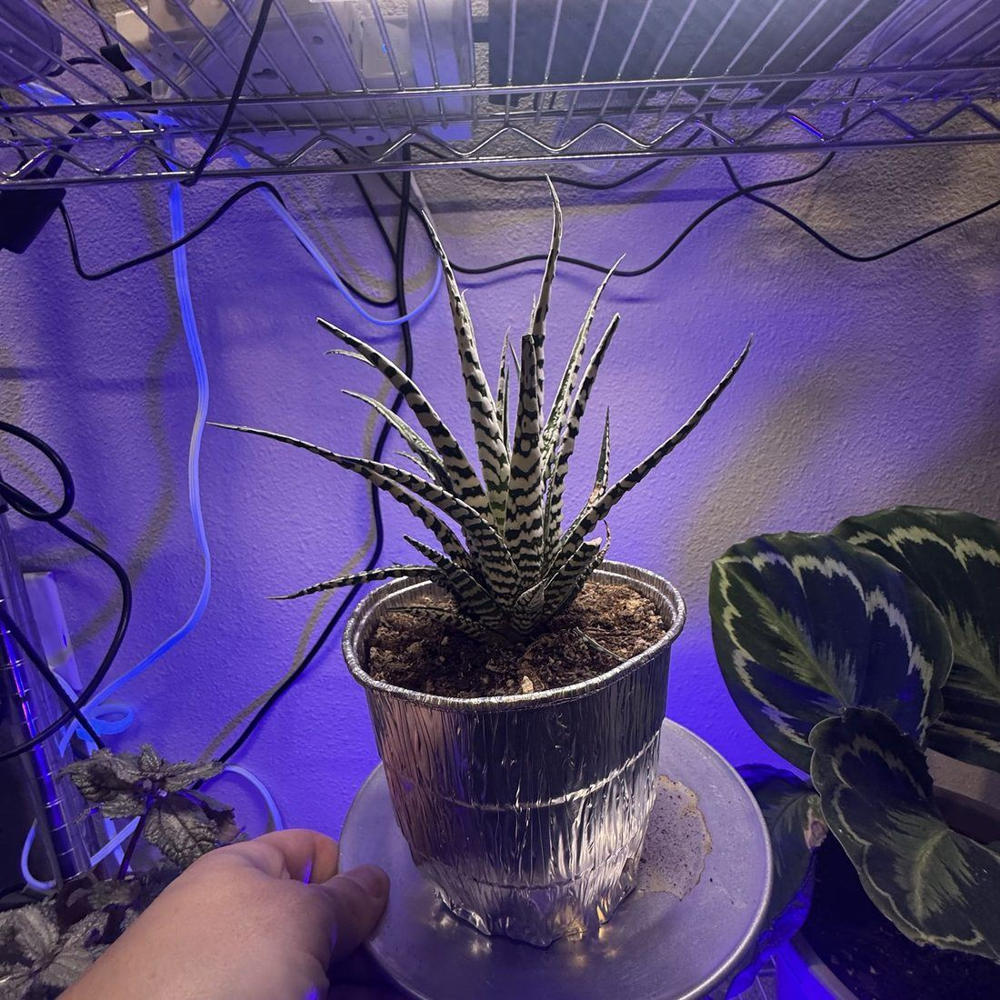
Firm, upright, compact growth with good striping; no obvious rot.
Let the mix dry almost completely; then water thoroughly.
Bright indirect light with some gentle direct sun; protect from intense afternoon heat.
Cactus/succulent fertilizer at 1/4–1/2 strength every 6–8 weeks in spring–summer; skip in winter.
Not recorded
Prefers a snug pot; repot only when clearly crowded.
1 part cactus/succulent mix + 1 part pumice/perlite.
Watch for soft/translucent lower leaves, stretching, or a mix that stays damp for too long.
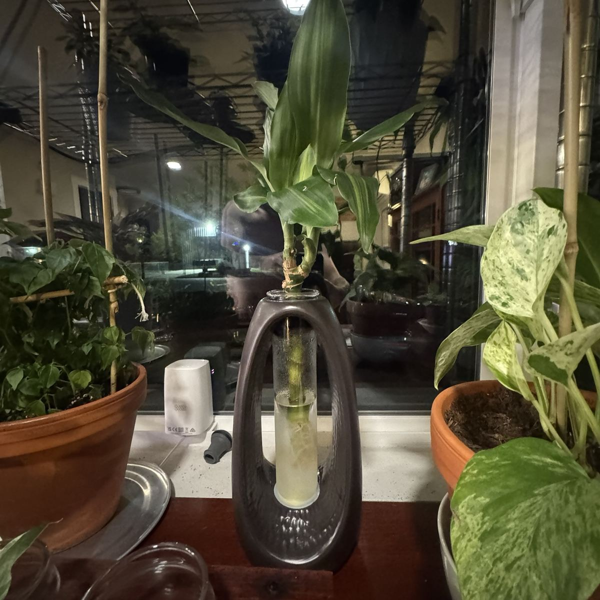
Foliage is green and upright; the water reservoir looks cloudy and is due for cleaning.
Keep roots/lower stem base in clean water; refresh about weekly.
Medium to bright indirect light; avoid strong direct sun.
If grown in water, use a very dilute fertilizer only every 2–3 months; excess fertilizer can burn the roots.
Not recorded
No soil repot while water-grown.
No soil while water-grown.
Watch for yellow tips, soft/yellow cane tissue, algae, or recurring cloudy water.
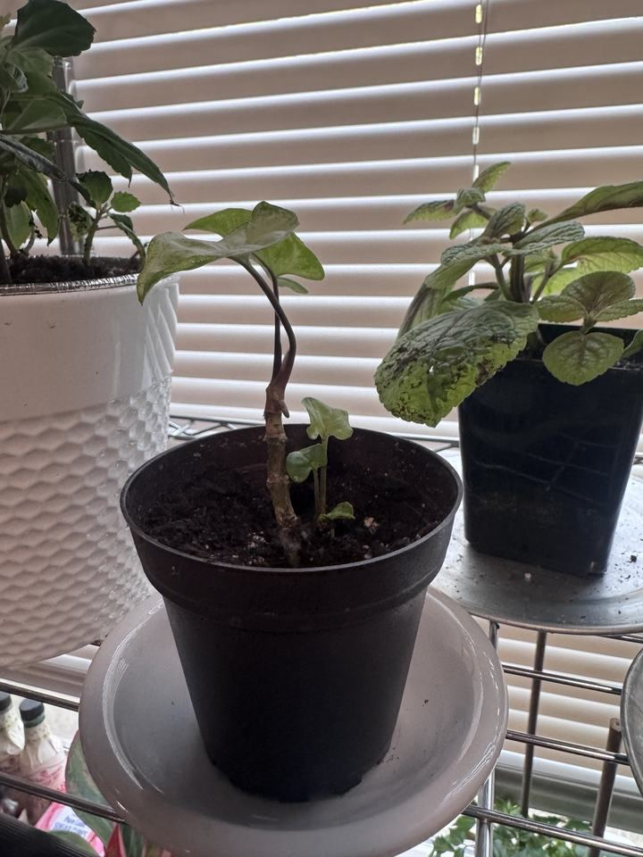
Sparse and pale; new growth encouraging.
Water when the top 1–2 in is dry; water thoroughly.
Medium to bright indirect light; brighter light generally produces stronger, more compact growth.
Balanced fertilizer at 1/2 strength about monthly during active growth.
Not recorded
Roots at the drainage holes reported Oct 10. Check whether the root ball is densely crowded or dries unusually fast before sizing up; visible roots alone do not require an immediate repot.
2 parts indoor mix + 1 part orchid bark + 1 part perlite/pumice.
Track the new basal shoot and whether new leaves emerge greener and larger.
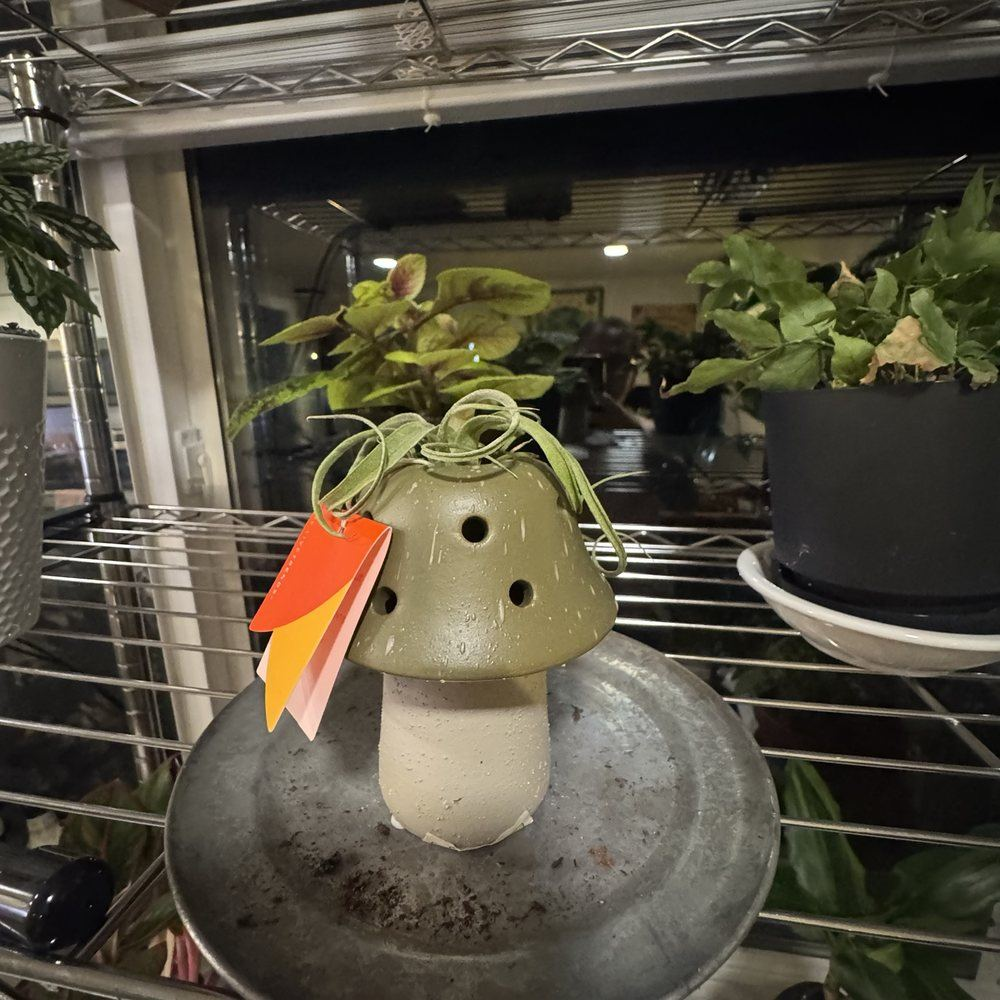
Good — foliage is intact and normally curled with no obvious base rot visible in this photo.
Soak or rinse about weekly, then dry completely with good airflow.
Bright indirect light with good airflow; gentle morning sun is fine.
Air-plant or bromeliad fertilizer at about 1/4 strength roughly monthly during active growth.
Not recorded
No traditional repotting.
No soil.
Because the decorative holder encloses the base, be especially alert for trapped moisture, a soft/dark base, or leaves pulling loose.
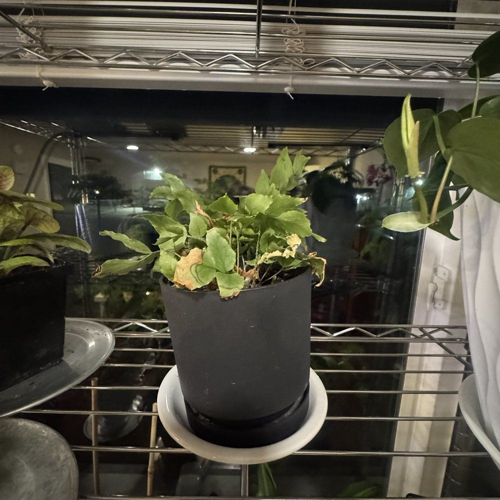
Watch / stable — plenty of living green foliage, but several older fronds have substantial crispy brown margins from prior moisture or environmental stress.
Water when the top ½–1 in is dry; water thoroughly.
Medium to bright indirect light; avoid hot direct sun.
Balanced fertilizer at 1/4–1/2 strength about monthly in spring–summer.
Not recorded
Repot when rootbound or the mix/drainage deteriorates.
2 parts indoor mix/coco + 1 part perlite/pumice + 1 part fine bark.
Judge progress by the newest fronds: clean new growth is more important than old damaged edges, which will not repair.
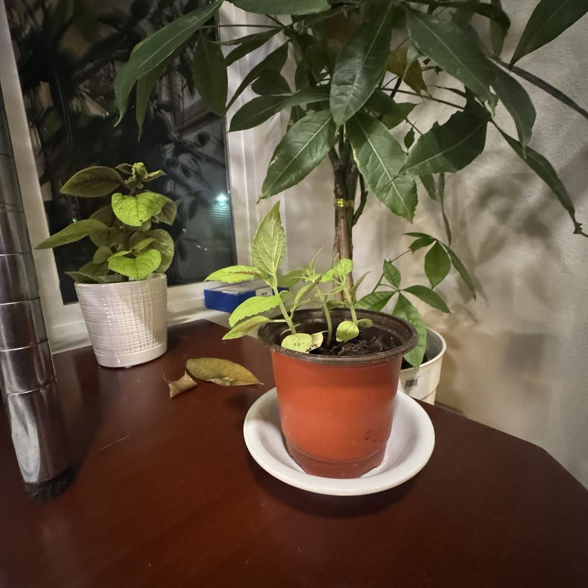
Sparse but actively producing fresh pale-green growth; older leaves still show stress spotting.
Water when the top 1 in is dry; water thoroughly.
Bright indirect light; a little gentle morning or late-day sun is fine.
Balanced fertilizer at 1/2 strength about monthly during active growth.
Not recorded
Repot when rootbound or the mix/drainage deteriorates.
2 parts indoor mix + 1 part perlite/pumice.
Track whether new growth emerges clean and stronger-colored while the older spotted leaves age out.
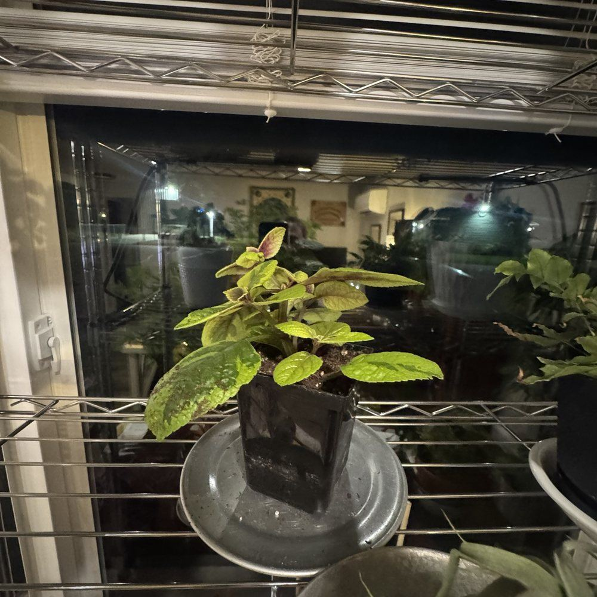
Good / establishing — multiple fresh shoots are developing. One older leaf still shows mottled damage, but the newest growth looks better.
Water when the top 1 in is dry; water thoroughly.
Bright indirect light; a little gentle morning or late-day sun is fine.
Balanced fertilizer at 1/2 strength about monthly during active growth.
Not recorded
Repot when rootbound or the mix/drainage deteriorates.
2 parts indoor mix + 1 part perlite/pumice.
Watch whether new leaves emerge clean. If the dark mottling stays limited to older foliage, treat it as historical damage rather than an active problem.
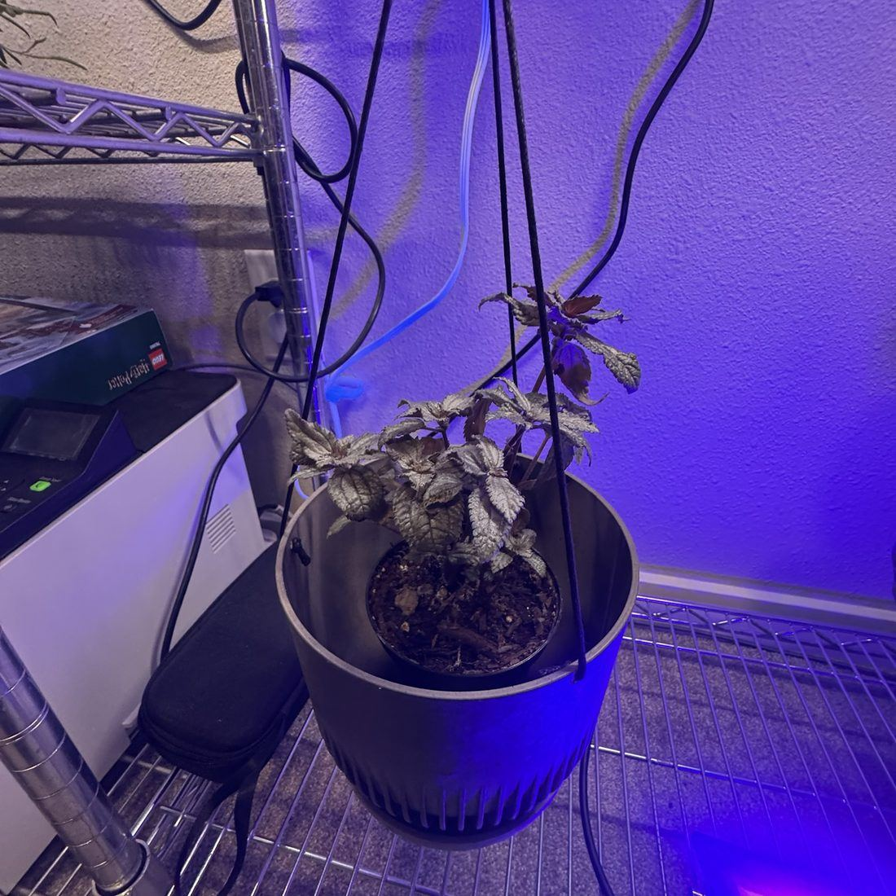
Small but stable with textured foliage and active growing tips.
Water when the top 1 in is dry; water thoroughly.
Medium to bright indirect light; avoid harsh direct sun.
Balanced fertilizer at 1/4–1/2 strength about monthly during active growth.
Not recorded
Recently repotted—leave it alone for now.
2 parts indoor mix/coco + 1 part perlite/pumice.
Track new branching and leaf firmness; watch for crisp edges or prolonged wet soil.
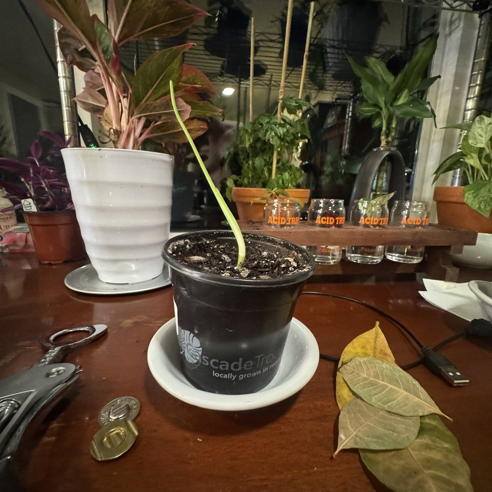
Concern / alive — still nearly leafless, but the pale green shoot remains upright. Recovery is possible, but this division has very little foliage to support it.
Because Orion is nearly leafless, let the upper 2–3 in of mix dry and confirm the pot is getting lighter before watering thoroughly and draining.
Bright indirect light; protect highly variegated tissue from harsh direct sun.
Hold fertilizer while actively recovering from division; once stable, use balanced fertilizer at 1/2 strength about monthly during active growth.
Not recorded
Recently divided and repotted—leave undisturbed while roots recover.
2 parts indoor mix + 1 part orchid bark + 1 part perlite/pumice.
Watch whether the green shoot stays firm and continues developing. Any softening, darkening at the base, or stalled/wilting growth would raise concern for root or stem rot.
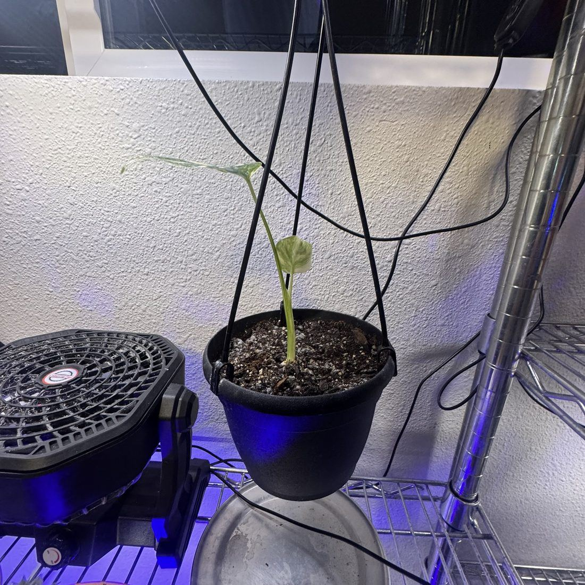
Recovering with two small functional leaves; the newer leaf is open and the stem remains firm.
Water when the top 1–2 in is dry; water thoroughly.
Bright indirect light; protect highly variegated tissue from harsh direct sun.
Hold fertilizer while actively recovering from division; once stable, use balanced fertilizer at 1/2 strength about monthly during active growth.
Not recorded
Recently divided and repotted—leave undisturbed while roots recover.
2 parts indoor mix + 1 part orchid bark + 1 part perlite/pumice.
Track the newest leaf, petiole firmness, and any new growth point; the main risk is rot from staying wet while foliage is sparse.
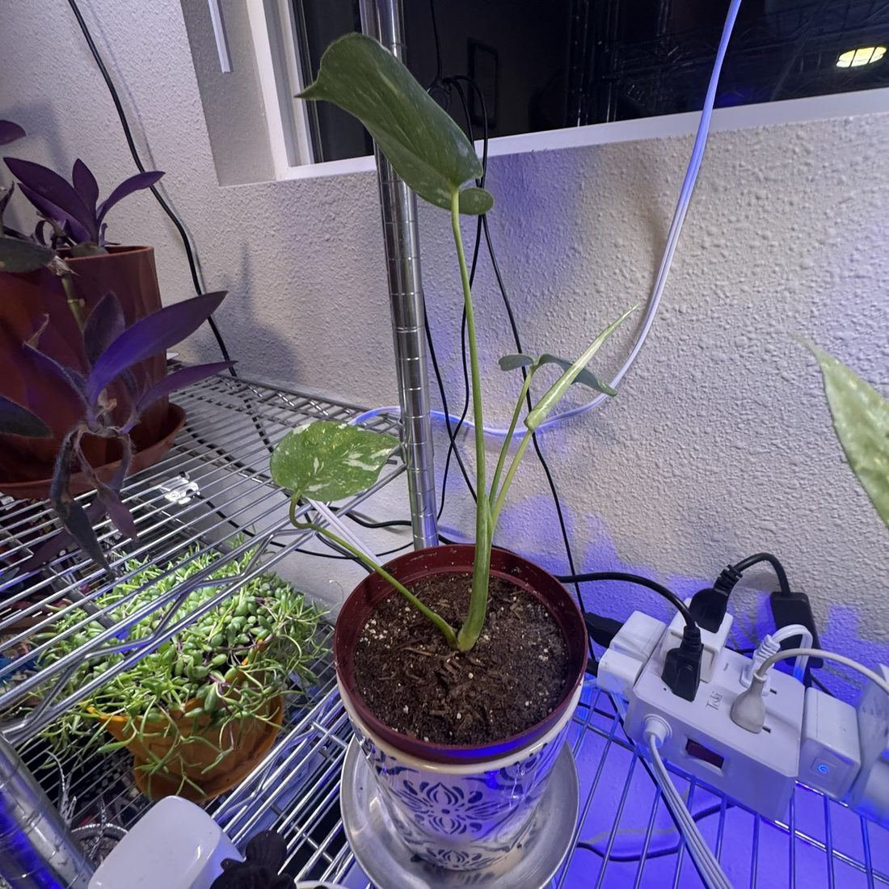
Recovering well with multiple functional leaves and a new spear actively emerging.
Water when the top 1–2 in is dry; water thoroughly.
Bright indirect light; protect highly variegated tissue from harsh direct sun.
Once recovery is steady, use balanced fertilizer at 1/2 strength about monthly during active growth.
Not recorded
Recently divided and repotted—leave undisturbed while roots recover.
2 parts indoor mix + 1 part orchid bark + 1 part perlite/pumice.
Track the new leaf for normal opening and useful green tissue; watch for prolonged wet soil.
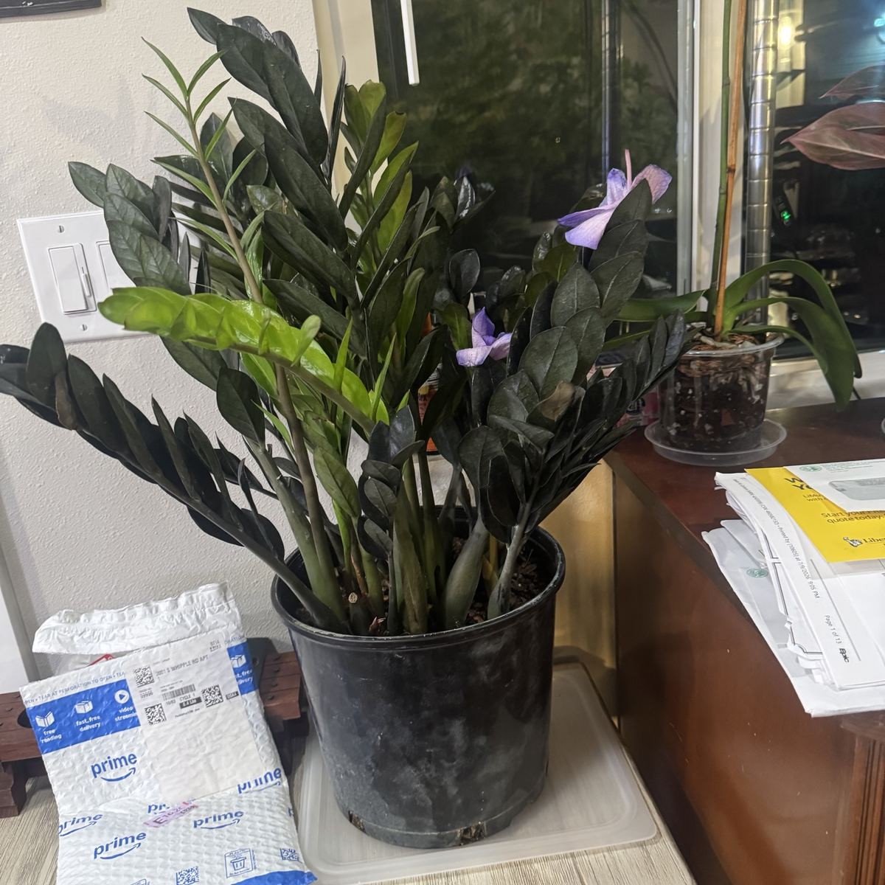
Excellent; multiple fresh lime-green shoots are actively expanding.
Let the mix dry almost completely; then water thoroughly.
Low to bright indirect light; moderate-bright indirect light gives the best growth without needing direct sun.
Balanced fertilizer at 1/2 strength every 6–8 weeks in spring–summer; little or none in winter.
Not recorded
Prefers a snug pot; repot only when clearly crowded.
2 parts indoor mix + 1 part perlite/pumice + 1 part fine bark/coco.
Track the new lime-green shoots as they mature and darken; the isolated older brown patch is cosmetic unless it spreads.
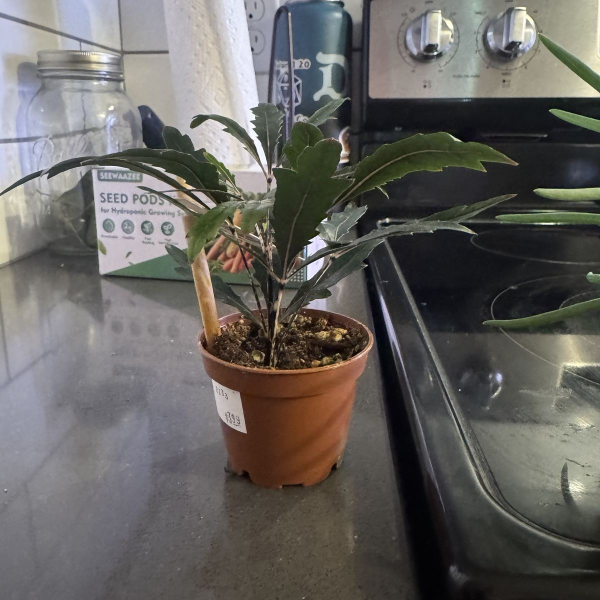
Compact, healthy foliage with no obvious new acclimation stress.
Water when the top 1 in is dry; water thoroughly.
Bright indirect light; stable light is important and harsh midday sun can scorch foliage.
Balanced fertilizer at 1/2 strength about monthly in spring–summer; wait if the plant is stressed after a move.
Not recorded
Repot when rootbound or the mix/drainage deteriorates.
2 parts indoor mix + 1 part perlite/pumice + 1 part fine bark/coco.
Watch for sudden leaf drop, crispy tips, or spider mites on the narrow leaflets.
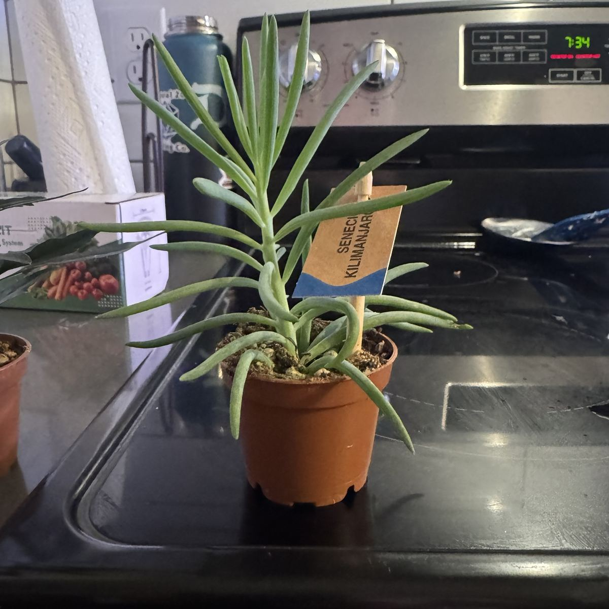
Upright and actively growing with firm, narrow foliage and no obvious rot.
Let the mix dry almost completely; then water thoroughly.
Very bright light with direct sun; use the brightest window available.
Cactus/succulent fertilizer at 1/4–1/2 strength every 6–8 weeks in spring–summer; skip in winter.
Not recorded
Prefers a snug pot; repot only when clearly crowded.
1 part cactus/succulent mix + 1 part pumice/perlite.
Watch for stretching, soft/translucent foliage, or stem collapse; compact new growth is the goal.
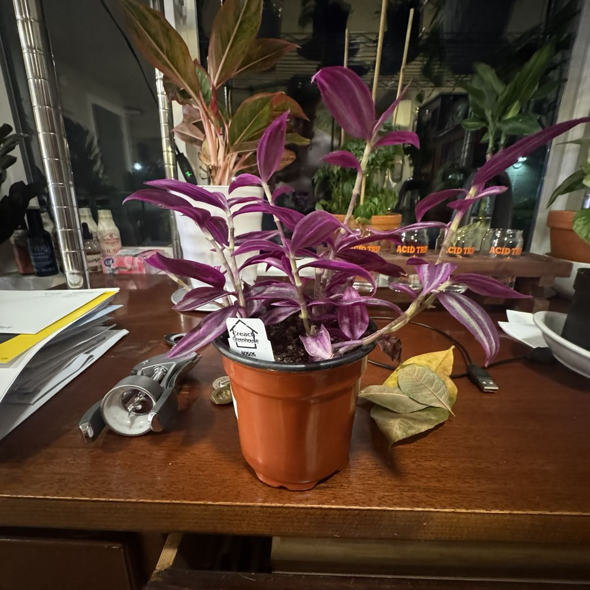
Vigorous, colorful growth with multiple healthy stems.
Water when the top 1 in is dry; water thoroughly.
Very bright indirect light with some direct sun for compact growth and strong purple/silver color.
Balanced fertilizer at 1/2 strength about monthly during active growth.
Not recorded
Repot when rootbound or the mix/drainage deteriorates.
2 parts indoor mix + 1 part perlite/pumice.
Track branching and color; root trimmed tips back into the pot if you want to thicken the planting.
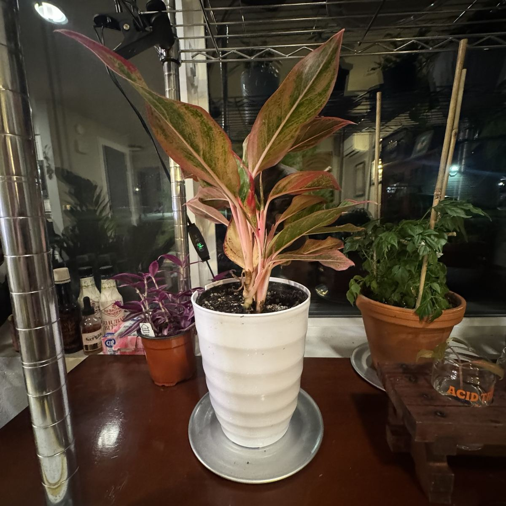
Good overall; upright, colorful foliage with a few aging or damaged lower leaves.
Water when the top 1–2 in are dry; water thoroughly and drain completely.
Medium to bright indirect light; avoid prolonged harsh direct sun.
Balanced houseplant fertilizer at 1/2 strength about monthly during active growth.
Not recorded
Repot only when clearly rootbound or the mix has degraded; usually every 1–2 years.
2 parts indoor mix + 1 part perlite/pumice; optional fine bark for extra aeration.
Track lower-leaf yellowing/browning and whether new leaves emerge upright and strongly colored.
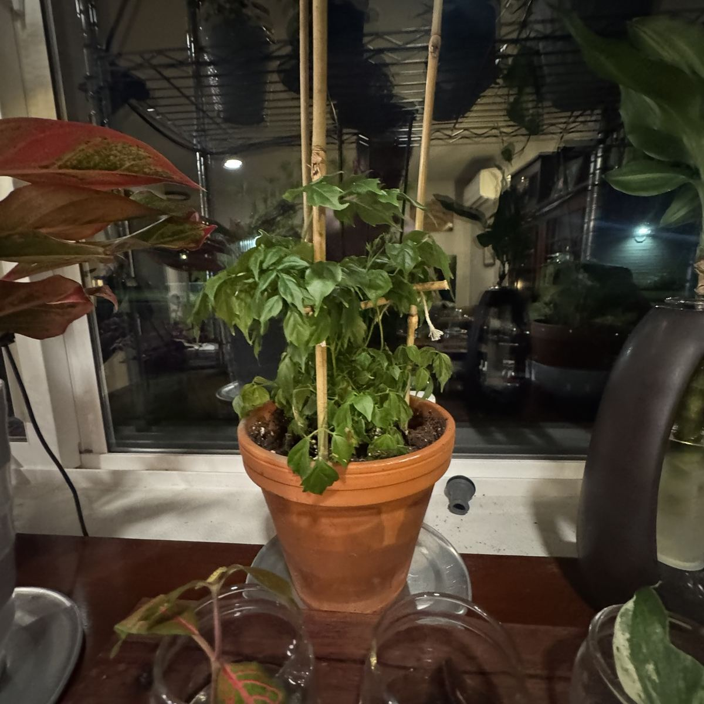
Alive and established on its trellis; foliage is somewhat droopy and sparse in places.
Water when the top 1–2 in are dry; soak thoroughly and drain. Terracotta can dry quickly.
Medium to bright indirect light; gentle morning sun is fine.
Balanced fertilizer at 1/2 strength about monthly during active growth.
Not recorded
Repot when clearly rootbound, drainage slows, or the pot begins drying unusually fast.
2 parts indoor mix + 1 part perlite/pumice; fine bark can be added for extra air space.
Track droop, leaf drop, bare stems, and new tendrils/growth reaching the trellis.
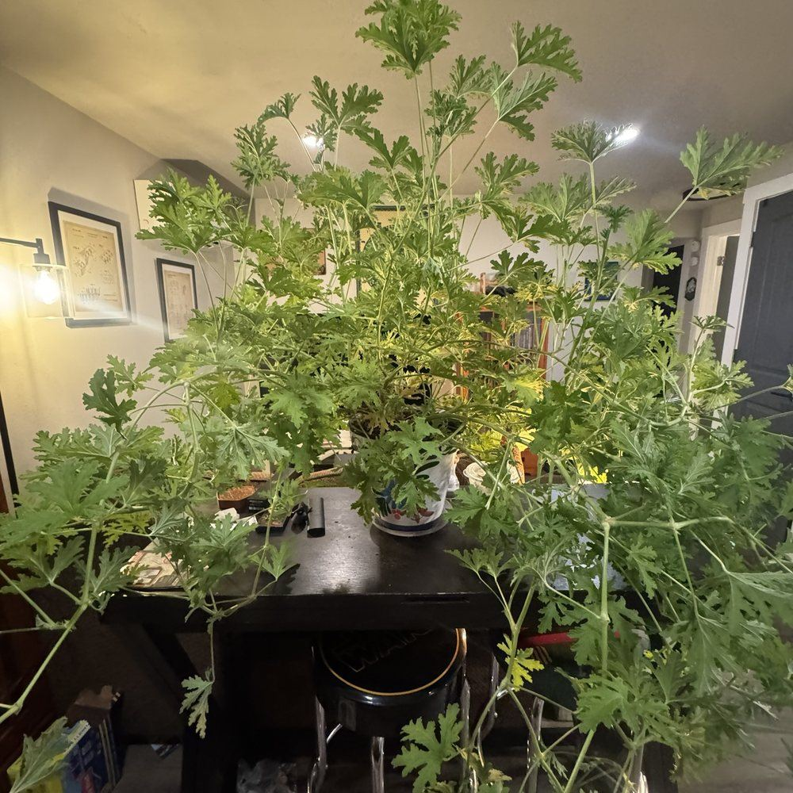
Watch / vigorous but very leggy — the plant has a large amount of healthy green foliage, but the long, widely spaced stems show it is stretching and becoming difficult to manage indoors.
Water thoroughly when the top 1–2 in of soil are dry, then drain completely. Avoid keeping the root ball constantly wet.
Very bright light; several hours of direct window sun or a strong grow light is ideal indoors. Acclimate gradually to stronger sun.
Balanced fertilizer at about 1/2 strength monthly during active growth; reduce or pause if winter growth slows.
Not recorded
Do not repot just because the top is large. Repot only if roots are crowded, drainage is poor, or the pot dries abnormally fast; move up one size.
2 parts indoor potting mix + 1 part perlite/pumice. Good drainage matters more than a specialty mix.
Watch spacing between new leaves after pruning. Tighter, sturdier regrowth indicates enough light; continued long bare internodes mean it needs more light.